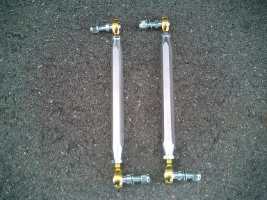
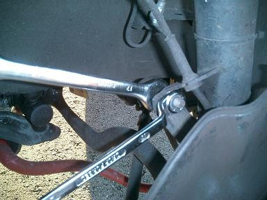
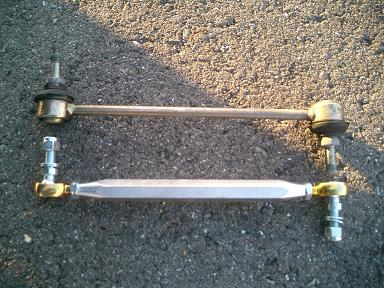
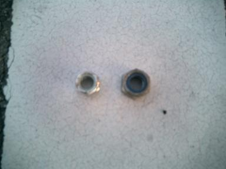
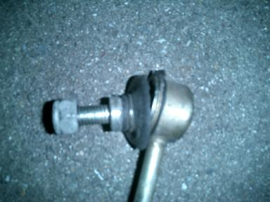
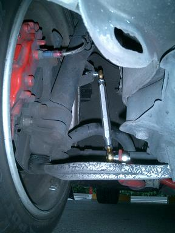
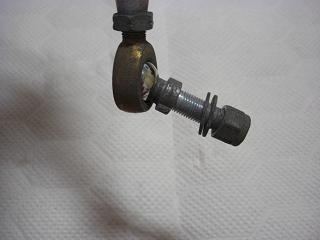

2007/9/20 スタビリンクの交換
 サードパティー品では、半年も持たなかったので。。 思い切ってBMP製のリンクに交換しました。 |
 17mmのメガネとスパナで外します。 |
 元々ついていたのと長さを揃えます。 |
 左・・・BMP製 14mm 右・・・元々のナット 17mm 17mmの工具しか持ってこなかったので取りに帰る羽目に。。。 |
 半年でブーツに亀裂が入り、１年でこのような状態に・・・＾＾； |
 交換後の様子。 |
2008/10 その後･･･  重力に負けてしまったリンク 26000kmでこの状況。 うたい文句は半永久だったのに・・・＾＾； この部分は、OEMでも社外品でもなく純正品が最良の選択だと思う。 |